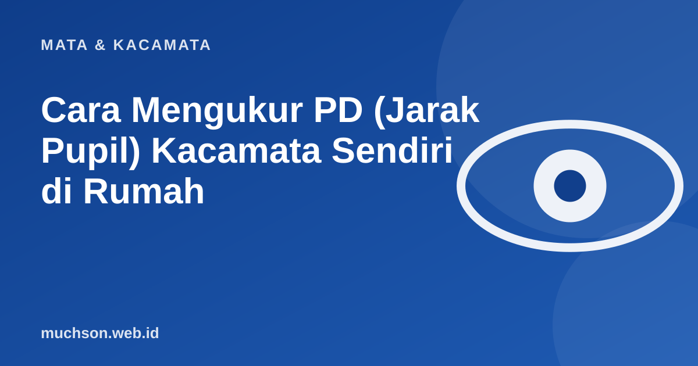

Beranda › Artikel › Mata & Kacamata
Mata & KacamataCara Mengukur PD (Jarak Pupil) Kacamata Sendiri di Rumah
Banyak toko online meminta nilai PD. Idealnya diukur oleh optik dengan alat khusus, tetapi untuk keperluan mendesak Anda bisa memperkirakannya sendiri. Berikut cara yang paling masuk akal, dan hal yang perlu diwaspadai.

Apa itu PD dan mengapa penting?
PD (pupillary distance) adalah jarak antara pusat kedua pupil dalam milimeter. Pusat optik lensa harus berada tepat di depan pupil. Bila meleset, Anda akan melihat melalui bagian lensa yang berkekuatan sedikit berbeda, dan itu bisa menimbulkan pusing, mata cepat lelah, atau pandangan terasa aneh, terutama pada resep besar dan lensa progresif.
Cara mengukur dengan penggaris
- Berdiri sekitar 20 cm dari cermin dengan penggaris menempel di dahi atau hidung.
- Pejamkan satu mata, buka mata kanan, tatap pupil kanan Anda di cermin lalu catat angka di penggaris.
- Tutup mata kanan, buka mata kiri, lalu catat angka di pupil kiri.
- Selisihnya adalah PD total.
- Lakukan tiga kali dan ambil rata-rata.
Pengukuran sendiri bisa meleset 1 sampai 3 mm. Untuk resep kecil dan lensa single vision, biasanya masih bisa ditoleransi. Untuk resep besar, silinder, dan terutama lensa progresif, ukur di optik.